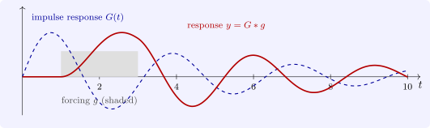

6.3 The impulse response and Green’s function
Theorem 6.3.1. Let \(G\) be the solution of \(p(D)G = 0\) with \(G(0) = G'(0) = \dots = G^{(n-2)}(0) = 0\) and \(G^{(n-1)}(0) = 1\). For continuous \(g\), the solution of \(p(D)y = g\) with zero initial data at \(t = 0\) is \[ y(t) = \int _0^tG(t - s)g(s)\,ds = (G * g)(t) . \]
Proof. Differentiating under the integral sign once, \(y'(t) = G(0)g(t) + \int _0^tG'(t - s)g(s)\,ds\), and the first term vanishes if \(n \geq 2\). Repeating, for \(k \leq n - 1\) \[ y^{(k)}(t) = \int _0^tG^{(k)}(t - s)g(s)\,ds , \] because each differentiation produces a boundary term \(G^{(j)}(0)g(t)\) with \(j \leq n - 2\), which is zero; in particular \(y^{(k)}(0) = 0\). One more differentiation gives the boundary term \(G^{(n-1)}(0)g(t) = g(t)\): \[ y^{(n)}(t) = g(t) + \int _0^tG^{(n)}(t - s)g(s)\,ds . \] Then \(p(D)y = g(t) + \int _0^t\bigl (p(D)G\bigr )(t - s)g(s)\,ds = g(t)\). □
\(G\) is the impulse response: the response of the system at rest to a unit blow at time \(0\), which leaves the position and lower derivatives unchanged and gives the \((n - 1)\)st derivative a unit jump. The convolution formula superposes the responses to the impulses \(g(s)\,ds\) delivered at the earlier times \(s\), and \(G(t - s)\) is the Green’s function of the initial value problem. For the oscillator \(y'' + 2\zeta \omega _0y' + \omega _0^2y = g\) with \(0 < \zeta < 1\), \[ G(t) = \frac {e^{-\zeta \omega _0t}\sin \omega _dt}{\omega _d}, \qquad \omega _d = \omega _0\sqrt {1 - \zeta ^2}, \] a damped oscillation at the damped frequency \(\omega _d\). Figure 9 shows \(G\) and the response to a rectangular pulse.

Questions on this section
Stuck on something here? Ask below and it stays attached to this topic.